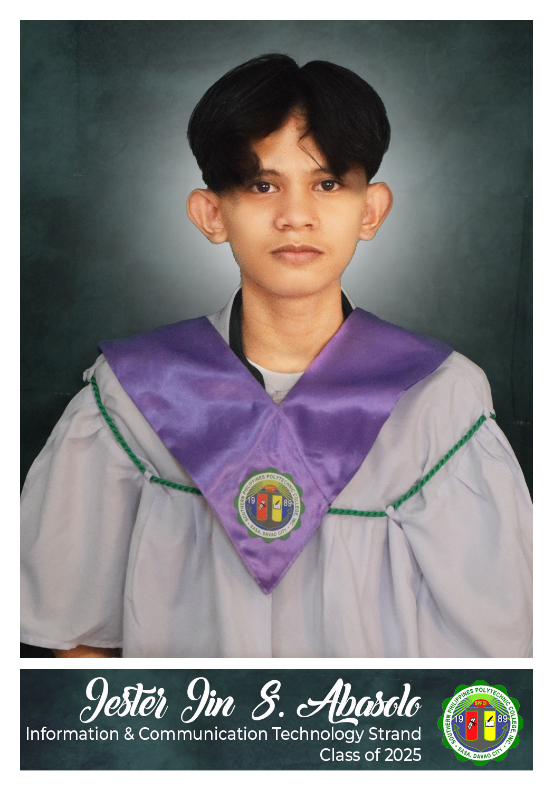

Information Technology Student
Future IT Professional | Web Developer | Java Enthusiast
I am Jester Jin S. Abasolo, a first-year BSIT student at Davao Del Norte State College (DNSC). I am passionate about software development and building systems that solve real-world problems. My goal is to become a reliable IT professional who creates meaningful and practical solutions.
A console-based banking app built in Java using JOptionPane. Handles account creation, deposits, withdrawals, and balance inquiries.
A website with the tagline "Equal Access, Unlimited Potential" — designed to promote fair access to digital resources and opportunities.
A library system that tracks book borrowing, due dates, and borrower records — replacing manual logbooks with a digital workflow.